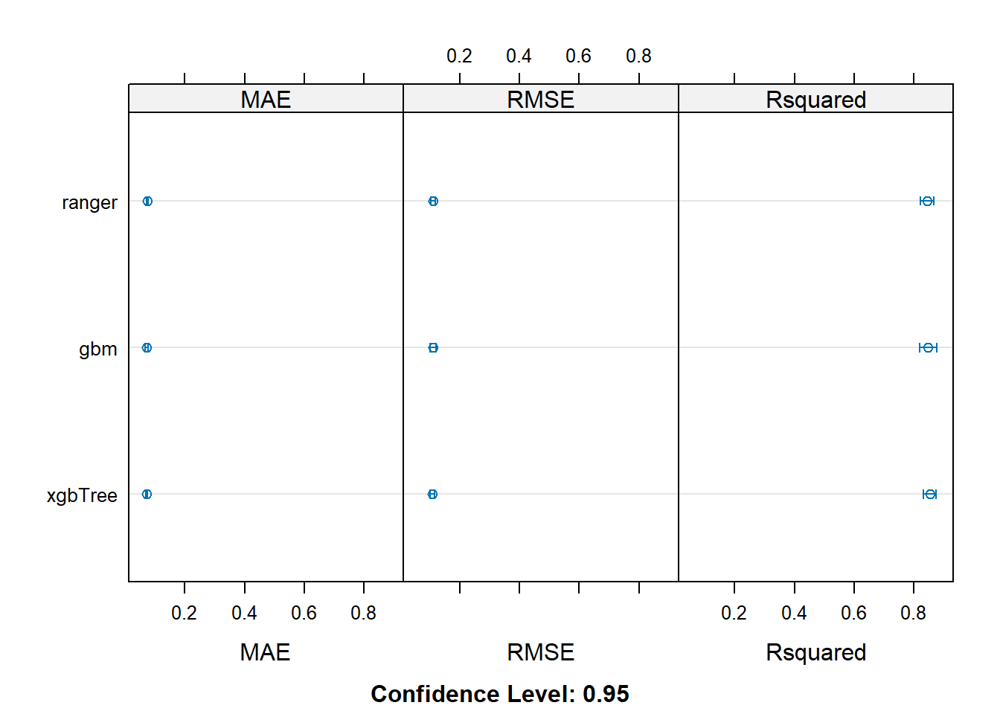
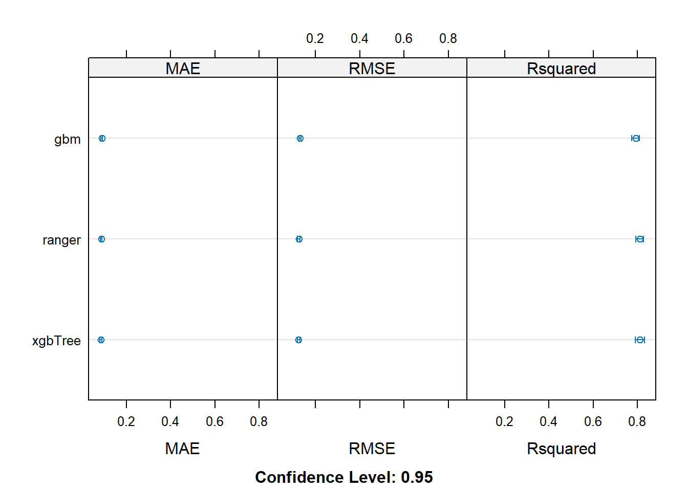
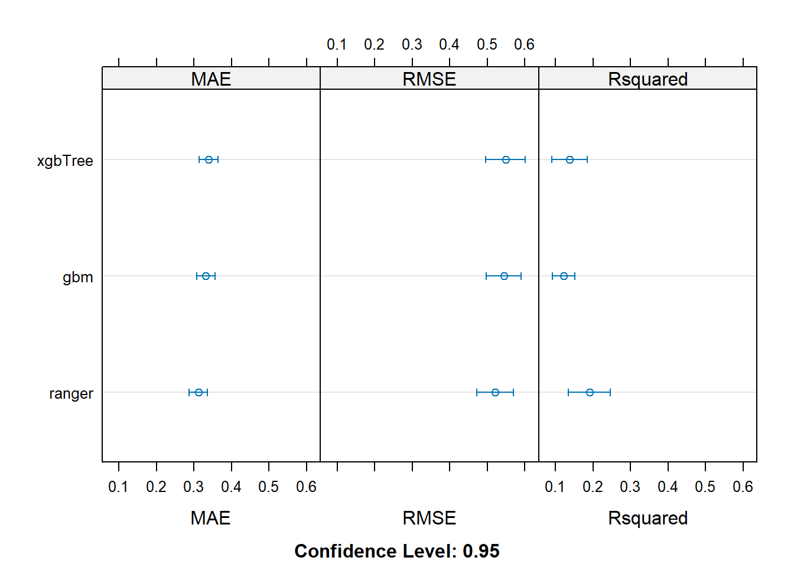
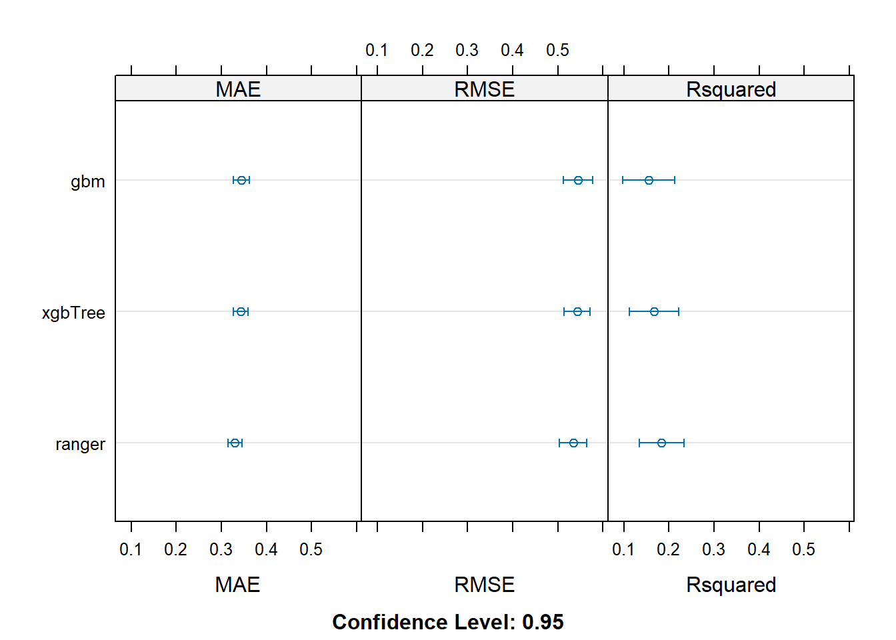

![]()
rm(list = ls())
source("../src/functions.R")4 Script 4 - FinalModels
pckgs <- c("dplyr", "ggplot2", "reshape2",
"ggcorrplot",
"caret", "recipes", "caretEnsemble",
"randomForest", "ranger", "gbm", "xgboost",
"vegan", "pdp",
"gridExtra", "kableExtra")
install_and_load(pckgs)# Load workspace to save computing time:
## it has: varPart from ranger models
## recursive feature selection results
# load("data/varPart_rfe.RData")
# load("data/models.RData")
load("../data/RData/03_reduced_hyper_para_tuning_all_models.RData")4.0.1 Train all models together
5 Jaccard 1
tictoc::tic("J1")
# Define model variables (response, indices and predictors)
response <- "Jaccard" # Replace with your actual response variable name
predictors <- reduced_predictors[[1]] # Replace with your actual predictors
index <- indices_J1
dd <- dat_train_J1 %>% select(all_of(c(response, predictors)))
dd_test <- dat_test_J1 %>% select(all_of(c(response, predictors)))
# Define training control
trained_control <- trainControl(
method = "repeatedcv",
number = 10,
repeats = 3,
savePredictions = "final",
returnResamp = "final",
verboseIter = FALSE,
index = index # Ensure indices_J1 is defined
)
# Train all models at once using caretList / using bestFit hyperparameters from 03_HyperparameterTuning.qmd
set.seed(42)
modelsList_J1 <- caretList(
as.formula(paste(response, "~ .")),
data = dd,
trControl = trained_control,
tuneList = list(
ranger = caretModelSpec(
method = "ranger",
tuneGrid = expand.grid(
mtry = 12,
splitrule = "variance",
min.node.size = 5
),
importance = "permutation",
num.trees = 5000
),
gbm = caretModelSpec(
method = "gbm",
tuneGrid = expand.grid(
n.trees = 300,
interaction.depth = 10,
shrinkage = 0.1,
n.minobsinnode = 10
),
verbose = FALSE
),
xgbTree = caretModelSpec(
method = "xgbTree",
tuneGrid = expand.grid(
nrounds = 1000,
eta = 0.1,
max_depth = 5,
gamma = 0,
colsample_bytree = 0.6,
min_child_weight = 1,
subsample = 1
)
)
)
)## Summarzize across individual models ========================================#
# Create resamples from the list of models
resamps_J1 <- resamples(modelsList_J1)
# Plot the resampled error rates for each model
dotplot_resamps_J1 <- dotplot(resamps_J1)
# Summarize the resamples
summary_resamps_J1 <- summary(resamps_J1)
# Combine everything into a list
resamples_all_J1 <- list(
Jaccard1 = list(
resamps_J1 = resamps_J1,
Dotplot = dotplot_resamps_J1, # store the dotplot object
Summary = summary_resamps_J1 # store the summary object
)
)
resamples_all_J1$Jaccard1
$Jaccard1$resamps_J1
Call:
resamples.default(x = modelsList_J1)
Models: ranger, gbm, xgbTree
Number of resamples: 10
Performance metrics: MAE, RMSE, Rsquared
Time estimates for: everything, final model fit
$Jaccard1$Dotplot
$Jaccard1$Summary
Call:
summary.resamples(object = resamps_J1)
Models: ranger, gbm, xgbTree
Number of resamples: 10
MAE
Min. 1st Qu. Median Mean 3rd Qu. Max. NA's
ranger 0.06848070 0.07161636 0.07275848 0.07369927 0.07584192 0.08114329 0
gbm 0.06193790 0.07052741 0.07172446 0.07226187 0.07497275 0.08192653 0
xgbTree 0.06261764 0.07024619 0.07146359 0.07133180 0.07190695 0.07887175 0
RMSE
Min. 1st Qu. Median Mean 3rd Qu. Max. NA's
ranger 0.09883248 0.1030705 0.1094454 0.1113231 0.1157472 0.1297299 0
gbm 0.09389088 0.1015449 0.1052099 0.1103197 0.1181893 0.1372058 0
xgbTree 0.09516518 0.1021747 0.1034087 0.1084217 0.1145142 0.1314592 0
Rsquared
Min. 1st Qu. Median Mean 3rd Qu. Max. NA's
ranger 0.7892004 0.8340418 0.8523348 0.8452701 0.8662831 0.8809218 0
gbm 0.7733919 0.8255792 0.8668470 0.8478966 0.8737032 0.8916121 0
xgbTree 0.7890760 0.8366012 0.8634119 0.8530995 0.8725559 0.8886361 0## Predictive Performance analysis ================================================
p_J1 <- as.data.frame(
predict(modelsList_J1, newdata = dd_test)) %>%
cbind(dd_test$Jaccard) %>%
mutate(
error_ranger = dd_test$Jaccard-ranger,
error_gbm = dd_test$Jaccard-gbm,
error_xgb = dd_test$Jaccard-xgbTree)
p_J1 %>%
summarise(mean_ranger = mean(error_ranger),
mean_gbm = mean(error_gbm),
mean_xgb = mean(error_xgb)) %>%
kableExtra::kable() # ranger performs best| mean_ranger | mean_gbm | mean_xgb |
|---|---|---|
| 0.0101863 | 0.016859 | 0.011548 |
The ensemble model is not better than the ranger model alone. In fact, it’s a bit worse. We will discard the ensembleModel approach therefore.
# Create the ensemble model ================================================
## Are they correlated?
# yes. not the best foundation for ensembleModels...
modelCor(resamples(modelsList_J1)) ranger gbm xgbTree
ranger 1.0000000 0.6675497 0.7869473
gbm 0.6675497 1.0000000 0.8179074
xgbTree 0.7869473 0.8179074 1.0000000ensembleModel_J1 <- caretEnsemble(
modelsList_J1,
metric = "Rsquared",
trControl = trained_control)
summary(ensembleModel_J1)The following models were ensembled: ranger, gbm, xgbTree
They were weighted:
-0.0016 0.2234 0.3675 0.4111
The resulting Rsquared is: 0.8392
The fit for each individual model on the Rsquared is:
method Rsquared RsquaredSD
ranger 0.8452701 0.03151442
gbm 0.8478966 0.03864407
xgbTree 0.8530995 0.02992978# Summarize predictor importances ============================================
varImp(ensembleModel_J1) %>% arrange(desc(overall)) overall ranger gbm
rel_occ_Ncells 2.248180e+01 2.110555e+01 21.706537223
AOO 2.002525e+01 1.613348e+01 19.434330050
moran 1.105809e+01 1.026658e+01 10.077573258
D_AOO_a 1.102138e+01 1.625529e+01 9.226284350
rel_relCirc 4.398900e+00 5.956024e+00 4.990841294
x_intercept 4.263432e+00 5.348377e+00 4.266148165
mean_prob_cooccur 4.042548e+00 8.152068e+00 2.595945382
circ 3.346581e+00 2.752171e+00 4.746038605
GlobRangeSize_m2 3.321725e+00 1.641687e+00 3.568772501
BetaSR_sp 2.885173e+00 1.610684e+00 3.847881842
widthMinRect 2.454478e+00 1.671877e+00 2.836754971
Westernness 2.029216e+00 9.805118e-01 2.680586625
sp_centr_lon 1.686130e+00 1.628758e+00 1.357591296
Southernness 1.629908e+00 9.498427e-01 2.139620060
Dist_centroid_to_COG 1.563904e+00 2.043304e+00 1.470759314
sp_centr_lat 1.442999e+00 1.915912e+00 1.917358681
AlphaSR_sp 1.441137e+00 1.132847e+00 2.143360464
HabitatMarine 2.275902e-01 8.439158e-02 0.251957702
HabitatWetland 1.653433e-01 6.179756e-02 0.180502399
Trophic.NicheVertivore 9.790925e-02 2.053926e-02 0.121176238
HabitatRock 9.672362e-02 1.491517e-02 0.084563754
Trophic.NicheOmnivore 6.556258e-02 6.207227e-03 0.108953494
HabitatGrassland 4.882083e-02 2.025468e-02 0.054308271
HabitatHuman Modified 4.278182e-02 6.039479e-03 0.043946208
Trophic.NicheGranivore 3.786718e-02 1.444022e-02 0.071499196
HabitatForest 3.416879e-02 5.457398e-02 0.032852854
Trophic.NicheHerbivore terrestrial 2.428075e-02 7.273212e-02 0.000000000
Trophic.NicheInvertivore 2.045985e-02 5.811976e-02 0.012585871
Trophic.NicheHerbivore aquatic 1.553556e-02 8.073846e-03 0.015032065
HabitatWoodland 1.392963e-02 5.390698e-03 0.010580351
HabitatShrubland 7.501613e-03 9.869423e-03 0.005657515
Trophic.NicheFrugivore 4.513279e-03 1.527695e-02 0.000000000
HabitatRiverine 3.820960e-03 0.000000e+00 0.000000000
Trophic.NicheScavenger 2.560277e-04 1.148196e-03 0.000000000
Trophic.NicheNectarivore 1.419716e-04 6.319197e-04 0.000000000
HabitatDesert 1.409070e-04 6.319197e-04 0.000000000
xgbTree
rel_occ_Ncells 2.392296e+01
AOO 2.266889e+01
moran 1.236493e+01
D_AOO_a 9.781439e+00
rel_relCirc 3.023326e+00
x_intercept 3.671295e+00
mean_prob_cooccur 3.102192e+00
circ 2.418494e+00
GlobRangeSize_m2 4.014017e+00
BetaSR_sp 2.717204e+00
widthMinRect 2.538080e+00
Westernness 2.016874e+00
sp_centr_lon 2.011041e+00
Southernness 1.543846e+00
Dist_centroid_to_COG 1.386606e+00
sp_centr_lat 7.618571e-01
AlphaSR_sp 9.808885e-01
HabitatMarine 2.836383e-01
HabitatWetland 2.080715e-01
Trophic.NicheVertivore 1.191611e-01
HabitatRock 1.520610e-01
Trophic.NicheOmnivore 5.903117e-02
HabitatGrassland 5.944161e-02
HabitatHuman Modified 6.171164e-02
Trophic.NicheGranivore 2.053222e-02
HabitatForest 2.425431e-02
Trophic.NicheHerbivore terrestrial 1.965360e-02
Trophic.NicheInvertivore 7.029942e-03
Trophic.NicheHerbivore aquatic 2.004142e-02
HabitatWoodland 2.156525e-02
HabitatShrubland 7.863319e-03
Trophic.NicheFrugivore 2.697880e-03
HabitatRiverine 9.313886e-03
Trophic.NicheScavenger 0.000000e+00
Trophic.NicheNectarivore 2.594904e-06
HabitatDesert 0.000000e+00# ranger
imp_ranger <- varImp(modelsList_J1[[1]])$importance %>%
as.data.frame() %>%
rename("imp_ranger" = "Overall")
imp_ranger$var <- row.names(imp_ranger)
# gbm
imp_gbm <- varImp(modelsList_J1[[2]])$importance %>%
as.data.frame()%>%
rename("imp_gbm" = "Overall")
imp_gbm$var <- row.names(imp_gbm)
imp_merged <- merge(imp_ranger, imp_gbm)
# xgb
imp_xgb <- varImp(modelsList_J1[[3]])$importance %>%
as.data.frame()%>%
rename("imp_xgb" = "Overall")
imp_xgb$var <- row.names(imp_xgb)
imp_merged_all_J1 <- merge(imp_merged, imp_xgb) %>%
arrange(desc(imp_ranger))
# Print results
imp_merged_all_J1 %>%
kableExtra::kable()| var | imp_ranger | imp_gbm | imp_xgb |
|---|---|---|---|
| rel_occ_Ncells | 100.0000000 | 100.0000000 | 100.0000000 |
| D_AOO_a | 77.0190099 | 42.5046347 | 40.8872493 |
| AOO | 76.4418850 | 89.5321527 | 94.7578766 |
| moran | 48.6440018 | 46.4264436 | 51.6864475 |
| mean_prob_cooccur | 38.6252330 | 11.9592792 | 12.9674291 |
| rel_relCirc | 28.2201809 | 22.9923421 | 12.6377599 |
| x_intercept | 25.3410933 | 19.6537482 | 15.3463255 |
| circ | 13.0400334 | 21.8645588 | 10.1095107 |
| Dist_centroid_to_COG | 9.6813605 | 6.7756515 | 5.7961319 |
| sp_centr_lat | 9.0777625 | 8.8330933 | 3.1846275 |
| widthMinRect | 7.9215046 | 13.0686666 | 10.6093910 |
| GlobRangeSize_m2 | 7.7784629 | 16.4410033 | 16.7789353 |
| sp_centr_lon | 7.7172001 | 6.2542970 | 8.4063232 |
| BetaSR_sp | 7.6315666 | 17.7268341 | 11.3581454 |
| AlphaSR_sp | 5.3675327 | 9.8742625 | 4.1001975 |
| Westernness | 4.6457531 | 12.3492135 | 8.4307034 |
| Southernness | 4.5004405 | 9.8570308 | 6.4534085 |
| HabitatMarine | 0.3998549 | 1.1607457 | 1.1856325 |
| Trophic.NicheHerbivore terrestrial | 0.3446114 | 0.0000000 | 0.0821537 |
| HabitatWetland | 0.2928024 | 0.8315578 | 0.8697565 |
| Trophic.NicheInvertivore | 0.2753766 | 0.0579819 | 0.0293858 |
| HabitatForest | 0.2585764 | 0.1513500 | 0.1013851 |
| Trophic.NicheVertivore | 0.0973168 | 0.5582477 | 0.4981035 |
| HabitatGrassland | 0.0959685 | 0.2501932 | 0.2484710 |
| Trophic.NicheFrugivore | 0.0723836 | 0.0000000 | 0.0112774 |
| HabitatRock | 0.0706694 | 0.3895774 | 0.6356278 |
| Trophic.NicheGranivore | 0.0684191 | 0.3293902 | 0.0858264 |
| HabitatShrubland | 0.0467622 | 0.0260636 | 0.0328693 |
| Trophic.NicheHerbivore aquatic | 0.0382546 | 0.0692513 | 0.0837748 |
| Trophic.NicheOmnivore | 0.0294104 | 0.5019386 | 0.2467553 |
| HabitatHuman Modified | 0.0286156 | 0.2024561 | 0.2579599 |
| HabitatWoodland | 0.0255416 | 0.0487427 | 0.0901446 |
| Trophic.NicheScavenger | 0.0054403 | 0.0000000 | 0.0000000 |
| HabitatDesert | 0.0029941 | 0.0000000 | 0.0000000 |
| Trophic.NicheNectarivore | 0.0029941 | 0.0000000 | 0.0000108 |
| HabitatRiverine | 0.0000000 | 0.0000000 | 0.0389328 |
varImp(ensembleModel_J1) %>%
arrange(desc(overall)) %>%
kableExtra::kable()| overall | ranger | gbm | xgbTree | |
|---|---|---|---|---|
| rel_occ_Ncells | 22.4817990 | 21.1055504 | 21.7065372 | 23.9229568 |
| AOO | 20.0252534 | 16.1334806 | 19.4343301 | 22.6688859 |
| moran | 11.0580908 | 10.2665843 | 10.0775733 | 12.3649265 |
| D_AOO_a | 11.0213771 | 16.2552860 | 9.2262844 | 9.7814390 |
| rel_relCirc | 4.3989002 | 5.9560245 | 4.9908413 | 3.0233258 |
| x_intercept | 4.2634317 | 5.3483772 | 4.2661482 | 3.6712948 |
| mean_prob_cooccur | 4.0425479 | 8.1520680 | 2.5959454 | 3.1021925 |
| circ | 3.3465813 | 2.7521708 | 4.7460386 | 2.4184939 |
| GlobRangeSize_m2 | 3.3217251 | 1.6416874 | 3.5687725 | 4.0140175 |
| BetaSR_sp | 2.8851730 | 1.6106841 | 3.8478818 | 2.7172042 |
| widthMinRect | 2.4544782 | 1.6718771 | 2.8367550 | 2.5380800 |
| Westernness | 2.0292158 | 0.9805118 | 2.6805866 | 2.0168735 |
| sp_centr_lon | 1.6861300 | 1.6287576 | 1.3575913 | 2.0110411 |
| Southernness | 1.6299083 | 0.9498427 | 2.1396201 | 1.5438461 |
| Dist_centroid_to_COG | 1.5639036 | 2.0433044 | 1.4707593 | 1.3866061 |
| sp_centr_lat | 1.4429992 | 1.9159117 | 1.9173587 | 0.7618571 |
| AlphaSR_sp | 1.4411374 | 1.1328473 | 2.1433605 | 0.9808885 |
| HabitatMarine | 0.2275902 | 0.0843916 | 0.2519577 | 0.2836383 |
| HabitatWetland | 0.1653433 | 0.0617976 | 0.1805024 | 0.2080715 |
| Trophic.NicheVertivore | 0.0979093 | 0.0205393 | 0.1211762 | 0.1191611 |
| HabitatRock | 0.0967236 | 0.0149152 | 0.0845638 | 0.1520610 |
| Trophic.NicheOmnivore | 0.0655626 | 0.0062072 | 0.1089535 | 0.0590312 |
| HabitatGrassland | 0.0488208 | 0.0202547 | 0.0543083 | 0.0594416 |
| HabitatHuman Modified | 0.0427818 | 0.0060395 | 0.0439462 | 0.0617116 |
| Trophic.NicheGranivore | 0.0378672 | 0.0144402 | 0.0714992 | 0.0205322 |
| HabitatForest | 0.0341688 | 0.0545740 | 0.0328529 | 0.0242543 |
| Trophic.NicheHerbivore terrestrial | 0.0242807 | 0.0727321 | 0.0000000 | 0.0196536 |
| Trophic.NicheInvertivore | 0.0204598 | 0.0581198 | 0.0125859 | 0.0070299 |
| Trophic.NicheHerbivore aquatic | 0.0155356 | 0.0080738 | 0.0150321 | 0.0200414 |
| HabitatWoodland | 0.0139296 | 0.0053907 | 0.0105804 | 0.0215653 |
| HabitatShrubland | 0.0075016 | 0.0098694 | 0.0056575 | 0.0078633 |
| Trophic.NicheFrugivore | 0.0045133 | 0.0152769 | 0.0000000 | 0.0026979 |
| HabitatRiverine | 0.0038210 | 0.0000000 | 0.0000000 | 0.0093139 |
| Trophic.NicheScavenger | 0.0002560 | 0.0011482 | 0.0000000 | 0.0000000 |
| Trophic.NicheNectarivore | 0.0001420 | 0.0006319 | 0.0000000 | 0.0000026 |
| HabitatDesert | 0.0001409 | 0.0006319 | 0.0000000 | 0.0000000 |
rm(response, predictors, index, dd, dd_test, trained_control)
tictoc::toc()J1: 43.97 sec elapsed6 Jaccard 2
tictoc::tic("J2")
# Define model variables (response, indices and predictors)
response <- "Jaccard" # Replace with your actual response variable name
predictors <- reduced_predictors[[2]] # Replace with your actual predictors
index <- indices_J2
dd <- dat_train_J2 %>% select(all_of(c(response, predictors)))
dd_test <- dat_test_J2 %>% select(all_of(c(response, predictors)))
# Define training control
trained_control <- trainControl(
method = "repeatedcv",
number = 10,
repeats = 3,
savePredictions = "final",
returnResamp = "final",
verboseIter = FALSE,
index = index # Ensure indices_J2 is defined
)
# Train all models at once using caretList / using bestFit hyperparameters from 03_HyperparameterTuning.qmd
set.seed(42)
modelsList_J2 <- caretList(
as.formula(paste(response, "~ .")),
data = dd,
trControl = trained_control,
tuneList = list(
ranger = caretModelSpec(
method = "ranger",
tuneGrid = expand.grid(
mtry = 5,
splitrule = "variance",
min.node.size = 5
),
importance = "permutation",
num.trees = 5000
),
gbm = caretModelSpec(
method = "gbm",
tuneGrid = expand.grid(
n.trees = 50,
interaction.depth = 9,
shrinkage = 0.1,
n.minobsinnode = 10
),
verbose = FALSE
),
xgbTree = caretModelSpec(
method = "xgbTree",
tuneGrid = expand.grid(
nrounds = 1000,
eta = 0.1,
max_depth = 5,
gamma = 0.01,
colsample_bytree = 0.6,
min_child_weight = 1,
subsample = 1
)
)
)
)## Summarzize across individual models ========================================#
# Create resamples from the list of models
resamps_J2 <- resamples(modelsList_J2)
# Plot the resampled error rates for each model
dotplot_resamps_J2 <- dotplot(resamps_J2)
# Summarize the resamples
summary_resamps_J2 <- summary(resamps_J2)
# Combine everything into a list
resamples_all_J2 <- list(
Jaccard1 = list(
resamps_J2 = resamps_J2,
Dotplot = dotplot_resamps_J2, # store the dotplot object
Summary = summary_resamps_J2 # store the summary object
)
)
resamples_all_J2$Jaccard1
$Jaccard1$resamps_J2
Call:
resamples.default(x = modelsList_J2)
Models: ranger, gbm, xgbTree
Number of resamples: 10
Performance metrics: MAE, RMSE, Rsquared
Time estimates for: everything, final model fit
$Jaccard1$Dotplot
$Jaccard1$Summary
Call:
summary.resamples(object = resamps_J2)
Models: ranger, gbm, xgbTree
Number of resamples: 10
MAE
Min. 1st Qu. Median Mean 3rd Qu. Max. NA's
ranger 0.07893954 0.08245473 0.08522723 0.08620569 0.09027565 0.09796493 0
gbm 0.08389465 0.08534676 0.08913508 0.08927248 0.09162794 0.09938889 0
xgbTree 0.07828025 0.08270763 0.08399418 0.08554858 0.08843030 0.09721043 0
RMSE
Min. 1st Qu. Median Mean 3rd Qu. Max. NA's
ranger 0.1125653 0.1196879 0.1236389 0.1242638 0.1279999 0.1374080 0
gbm 0.1160564 0.1262113 0.1295391 0.1298688 0.1337012 0.1443002 0
xgbTree 0.1070532 0.1200788 0.1231785 0.1241742 0.1284834 0.1421728 0
Rsquared
Min. 1st Qu. Median Mean 3rd Qu. Max. NA's
ranger 0.7596017 0.7986473 0.8135708 0.8094090 0.8247881 0.8450611 0
gbm 0.7452297 0.7801081 0.7952683 0.7913620 0.8032783 0.8335825 0
xgbTree 0.7452082 0.8023182 0.8120472 0.8095943 0.8232890 0.8584104 0## Predictive Performance analysis ================================================
p_J2 <- as.data.frame(
predict(modelsList_J2, newdata = dd_test)) %>%
cbind(dd_test$Jaccard) %>%
mutate(
error_ranger = dd_test$Jaccard-ranger,
error_gbm = dd_test$Jaccard-gbm,
error_xgb = dd_test$Jaccard-xgbTree)
p_J2 %>%
summarise(mean_ranger = mean(error_ranger),
mean_gbm = mean(error_gbm),
mean_xgb = mean(error_xgb)) %>%
kableExtra::kable() # ranger performs best| mean_ranger | mean_gbm | mean_xgb |
|---|---|---|
| 0.0058978 | 0.0050606 | 0.0086411 |
The ensemble model is not better than the ranger model alone. In fact, it’s a bit worse. We will discard the ensembleModel approach therefore.
# Create the ensemble model ================================================
## Are they correlated?
# yes. not the best foundation for ensembleModels...
modelCor(resamples(modelsList_J2)) ranger gbm xgbTree
ranger 1.0000000 0.7087220 0.8517862
gbm 0.7087220 1.0000000 0.4165927
xgbTree 0.8517862 0.4165927 1.0000000ensembleModel_J2 <- caretEnsemble(
modelsList_J2,
metric = "Rsquared",
trControl = trained_control)
summary(ensembleModel_J2)The following models were ensembled: ranger, gbm, xgbTree
They were weighted:
0.0023 0.5489 -0.0384 0.4971
The resulting Rsquared is: 0.7829
The fit for each individual model on the Rsquared is:
method Rsquared RsquaredSD
ranger 0.8094090 0.02414369
gbm 0.7913620 0.02385256
xgbTree 0.8095943 0.02903417# Summarize predictor importances ============================================
varImp(ensembleModel_J2) %>% arrange(desc(overall)) overall ranger gbm xgbTree
rel_occ_Ncells 36.2019483 30.6406770 30.71455254 42.76746759
moran 14.5230983 11.7475052 15.68934146 17.49812317
AOO 14.4724987 14.5848535 19.01366798 13.99747404
D_AOO_a 11.1558704 15.6942177 12.99614943 6.00184528
x_intercept 7.6943735 8.6705150 3.71501500 6.92392805
rel_relCirc 3.3348299 5.6113834 1.42842448 0.96810732
BetaSR_sp 3.0263428 1.9812211 3.29259704 4.15991907
circ 2.2519701 2.4568247 4.36127472 1.86273389
Dist_centroid_to_COG 2.2420879 3.0571749 1.45380682 1.40288744
sp_centr_lon 1.3496431 1.6783866 0.04228594 1.08763841
Westernness 1.1948897 1.0428352 2.18772009 1.28607963
sp_centr_lat 0.9334169 1.7845072 0.84979502 0.00000000
GlobRangeSize_m2 0.8929399 0.0000000 2.33714816 1.76742422
AlphaSR_sp 0.5836263 0.8246285 1.91822133 0.21434225
Southernness 0.1424642 0.2252700 0.00000000 0.06202963# ranger
imp_ranger <- varImp(modelsList_J2[[1]])$importance %>%
as.data.frame() %>%
rename("imp_ranger" = "Overall")
imp_ranger$var <- row.names(imp_ranger)
# gbm
imp_gbm <- varImp(modelsList_J2[[2]])$importance %>%
as.data.frame()%>%
rename("imp_gbm" = "Overall")
imp_gbm$var <- row.names(imp_gbm)
imp_merged <- merge(imp_ranger, imp_gbm)
# xgb
imp_xgb <- varImp(modelsList_J2[[3]])$importance %>%
as.data.frame()%>%
rename("imp_xgb" = "Overall")
imp_xgb$var <- row.names(imp_xgb)
imp_merged_all_J2 <- merge(imp_merged, imp_xgb) %>%
arrange(desc(imp_ranger))
# Print results
imp_merged_all_J2 %>%
kableExtra::kable()| var | imp_ranger | imp_gbm | imp_xgb |
|---|---|---|---|
| rel_occ_Ncells | 100.0000000 | 100.000000 | 100.0000000 |
| D_AOO_a | 51.2202053 | 42.312677 | 14.0336700 |
| AOO | 47.5996451 | 61.904428 | 32.7292562 |
| moran | 38.3395744 | 51.081133 | 40.9145646 |
| x_intercept | 28.2974002 | 12.095293 | 16.1897078 |
| rel_relCirc | 18.3135100 | 4.650644 | 2.2636536 |
| Dist_centroid_to_COG | 9.9775044 | 4.733283 | 3.2802677 |
| circ | 8.0181802 | 14.199376 | 4.3554926 |
| BetaSR_sp | 6.4659834 | 10.719990 | 9.7268305 |
| sp_centr_lat | 5.8239809 | 2.766750 | 0.0000000 |
| sp_centr_lon | 5.4776421 | 0.137674 | 2.5431443 |
| Westernness | 3.4034338 | 7.122748 | 3.0071447 |
| AlphaSR_sp | 2.6912868 | 6.245317 | 0.5011806 |
| Southernness | 0.7351993 | 0.000000 | 0.1450393 |
| GlobRangeSize_m2 | 0.0000000 | 7.609254 | 4.1326371 |
varImp(ensembleModel_J2) %>%
arrange(desc(overall)) %>%
kableExtra::kable()| overall | ranger | gbm | xgbTree | |
|---|---|---|---|---|
| rel_occ_Ncells | 36.2019483 | 30.6406770 | 30.7145525 | 42.7674676 |
| moran | 14.5230983 | 11.7475052 | 15.6893415 | 17.4981232 |
| AOO | 14.4724987 | 14.5848535 | 19.0136680 | 13.9974740 |
| D_AOO_a | 11.1558704 | 15.6942177 | 12.9961494 | 6.0018453 |
| x_intercept | 7.6943735 | 8.6705150 | 3.7150150 | 6.9239281 |
| rel_relCirc | 3.3348299 | 5.6113834 | 1.4284245 | 0.9681073 |
| BetaSR_sp | 3.0263428 | 1.9812211 | 3.2925970 | 4.1599191 |
| circ | 2.2519701 | 2.4568247 | 4.3612747 | 1.8627339 |
| Dist_centroid_to_COG | 2.2420879 | 3.0571749 | 1.4538068 | 1.4028874 |
| sp_centr_lon | 1.3496431 | 1.6783866 | 0.0422859 | 1.0876384 |
| Westernness | 1.1948897 | 1.0428352 | 2.1877201 | 1.2860796 |
| sp_centr_lat | 0.9334169 | 1.7845072 | 0.8497950 | 0.0000000 |
| GlobRangeSize_m2 | 0.8929399 | 0.0000000 | 2.3371482 | 1.7674242 |
| AlphaSR_sp | 0.5836263 | 0.8246285 | 1.9182213 | 0.2143422 |
| Southernness | 0.1424642 | 0.2252700 | 0.0000000 | 0.0620296 |
rm(response, predictors, index, dd, dd_test, trained_control)
tictoc::toc()J2: 49.2 sec elapsed7 Log Ratio 1
tictoc::tic("LR1")
# Define model variables (response, indices and predictors)
response <- "log_R2_1"
predictors <- reduced_predictors[[3]] # Replace with your actual predictors
index <- indices_LR1
dd <- dat_train_LR1 %>% select(all_of(c(response, predictors)))
dd_test <- dat_test_LR1 %>% select(all_of(c(response, predictors)))
# Define training control
trained_control <- trainControl(
method = "repeatedcv",
number = 10,
repeats = 3,
savePredictions = "final",
returnResamp = "final",
verboseIter = FALSE,
index = index # Ensure indices_LR1 is defined
)
# Train all models at once using caretList / using bestFit hyperparameters from 03_HyperparameterTuning.qmd
set.seed(42)
modelsList_LR1 <- caretList(
as.formula(paste(response, "~ .")),
data = dd,
trControl = trained_control,
tuneList = list(
ranger = caretModelSpec(
method = "ranger",
tuneGrid = expand.grid(
mtry = 28,
splitrule = "extratrees",
min.node.size = 5
),
importance = "permutation",
num.trees = 5000
),
gbm = caretModelSpec(
method = "gbm",
tuneGrid = expand.grid(
n.trees = 50,
interaction.depth = 3,
shrinkage = 0.1,
n.minobsinnode = 10
),
verbose = FALSE
),
xgbTree = caretModelSpec(
method = "xgbTree",
tuneGrid = expand.grid(
nrounds = 1000,
eta = 0.1,
max_depth = 5,
gamma = 0.1,
colsample_bytree = 0.6,
min_child_weight = 1,
subsample = 1
)
)
)
)## Summarzize across individual models ========================================#
# Create resamples from the list of models
resamps_LR1 <- resamples(modelsList_LR1)
# Plot the resampled error rates for each model
dotplot_resamps_LR1 <- dotplot(resamps_LR1)
# Summarize the resamples
summary_resamps_LR1 <- summary(resamps_LR1)
# Combine everything into a list
resamples_all_LR1 <- list(
Jaccard1 = list(
resamps_LR1 = resamps_LR1,
Dotplot = dotplot_resamps_LR1, # store the dotplot object
Summary = summary_resamps_LR1 # store the summary object
)
)
resamples_all_LR1$Jaccard1
$Jaccard1$resamps_LR1
Call:
resamples.default(x = modelsList_LR1)
Models: ranger, gbm, xgbTree
Number of resamples: 10
Performance metrics: MAE, RMSE, Rsquared
Time estimates for: everything, final model fit
$Jaccard1$Dotplot
$Jaccard1$Summary
Call:
summary.resamples(object = resamps_LR1)
Models: ranger, gbm, xgbTree
Number of resamples: 10
MAE
Min. 1st Qu. Median Mean 3rd Qu. Max. NA's
ranger 0.2413500 0.2937891 0.3140971 0.3116381 0.3342397 0.3570233 0
gbm 0.2710595 0.3091150 0.3297544 0.3314569 0.3629118 0.3787333 0
xgbTree 0.2678089 0.3158956 0.3447055 0.3388593 0.3634772 0.3886261 0
RMSE
Min. 1st Qu. Median Mean 3rd Qu. Max. NA's
ranger 0.3800898 0.4863429 0.5411437 0.5204904 0.567322 0.5983651 0
gbm 0.4270322 0.5232623 0.5484819 0.5442317 0.591902 0.6322296 0
xgbTree 0.4088023 0.5069973 0.5762541 0.5487222 0.588816 0.6293142 0
Rsquared
Min. 1st Qu. Median Mean 3rd Qu. Max. NA's
ranger 0.11579499 0.12877743 0.1775331 0.1901280 0.2192717 0.3722954 0
gbm 0.06093550 0.09401116 0.1100171 0.1218121 0.1493415 0.1882298 0
xgbTree 0.04937369 0.08174521 0.1328073 0.1371819 0.1948978 0.2253123 0## Predictive Performance analysis ================================================
p_LR1 <- as.data.frame(
predict(modelsList_LR1, newdata = dd_test)) %>%
cbind(dd_test$log_R2_1) %>%
mutate(
error_ranger = dd_test$log_R2_1-ranger,
error_gbm = dd_test$log_R2_1-gbm,
error_xgb = dd_test$log_R2_1-xgbTree)
p_LR1 %>%
summarise(mean_ranger = mean(error_ranger),
mean_gbm = mean(error_gbm),
mean_xgb = mean(error_xgb)) %>%
kableExtra::kable() # ranger performs best| mean_ranger | mean_gbm | mean_xgb |
|---|---|---|
| 0.0172756 | 0.0109739 | 0.0058452 |
The ensemble model is not better than the ranger model alone. In fact, it’s a bit worse. We will discard the ensembleModel approach therefore.
# Create the ensemble model ================================================
## Are they correlated?
# yes. not the best foundation for ensembleModels...
modelCor(resamples(modelsList_LR1)) ranger gbm xgbTree
ranger 1.0000000 0.9515691 0.9546465
gbm 0.9515691 1.0000000 0.8665197
xgbTree 0.9546465 0.8665197 1.0000000ensembleModel_LR1 <- caretEnsemble(
modelsList_LR1,
metric = "Rsquared",
trControl = trained_control)
summary(ensembleModel_LR1)The following models were ensembled: ranger, gbm, xgbTree
They were weighted:
-0.0066 0.9729 -0.0139 0.0855
The resulting Rsquared is: 0.1385
The fit for each individual model on the Rsquared is:
method Rsquared RsquaredSD
ranger 0.1901280 0.07840451
gbm 0.1218121 0.04182013
xgbTree 0.1371819 0.06528472# Summarize predictor importances ============================================
varImp(ensembleModel_LR1) %>% arrange(desc(overall)) overall ranger gbm xgbTree
D_AOO_a 9.92796190 9.5125401 17.6939777 13.389344574
AlphaSR_sp 6.53972184 6.8849653 3.5110932 3.105305597
datasetBirds_atlas_EBBA 5.43632515 5.9892959 0.0000000 0.030802850
sp_centr_lon 5.01193330 5.0209245 2.8419212 5.262995161
datasetBirds_atlas_Japan 4.35874122 4.8042735 0.0000000 0.000000000
rel_maxDist 4.13658749 4.4315410 2.6906313 1.016571970
rel_relCirc 3.55247066 3.5897738 2.5687553 3.288281596
Southernness 3.23045741 3.2113260 6.9748939 2.838385915
x_intercept 3.06405924 3.2832897 0.0000000 1.068967617
atlas_widthMinRect 2.87253860 3.1661575 0.0000000 0.000000000
Westernness 2.86117464 2.7297333 5.5838645 3.913142173
IUCNLC 2.77972052 2.8741805 2.8029165 1.701343282
moran 2.58251295 2.6188672 1.3193391 2.374623255
rel_lin 2.47062581 2.4453067 2.4518271 2.761723418
rel_occ_Ncells 2.42794896 2.1626926 4.7955967 5.060040431
Mass 2.25245665 1.9218254 7.2411481 5.201479609
bearing 2.00633888 1.8148656 4.5973882 3.762679117
sp_centr_lat 2.00613316 1.7792523 1.8881329 4.606399427
bearingMinRect 1.72744509 1.7548552 0.0000000 1.696904740
AOO 1.66650692 1.3428689 8.1896334 4.286117740
widthMinRect 1.66589869 1.6437852 3.3059001 1.650422700
datasetBirds_Atlas_New_York 1.66445165 1.8345849 0.0000000 0.000000000
rel_elonRatio 1.64358544 1.5955601 0.5034746 2.375579893
Dist_centroid_to_COG 1.62024031 1.5643364 0.6457174 2.414900853
BetaSR_sp 1.59513558 1.4789963 0.5894578 3.080120839
mean_prob_cooccur 1.44898326 1.1829119 5.9389917 3.744758428
elonMinRect 1.43179117 1.4384167 0.9720997 1.431269666
minDist_toBorder_centr 1.39700803 1.2755075 3.0815177 2.504935835
atlas_bearingMinRect 1.35201521 1.4902126 0.0000000 0.000000000
Habitat.Density3 1.10167421 1.1632302 0.0000000 0.580786379
HabitatGrassland 1.02456017 1.0565355 1.4488756 0.591708231
Hand.Wing.Index 1.00600016 0.7362298 1.8227244 3.941984932
HabitatWetland 0.97933179 1.0780781 0.0000000 0.015436564
circ 0.94470115 0.9094419 1.2715356 1.292599300
GlobRangeSize_m2 0.67365596 0.5448102 0.0000000 2.249129405
HabitatForest 0.67298780 0.7394525 0.0000000 0.026453655
sd_PC1 0.60906604 0.5440202 2.4906645 1.042658246
IUCNNT 0.59282497 0.6197400 0.4066598 0.316946398
sd_PC2 0.56301281 0.3820564 0.9381582 2.560531108
Trophic.NicheHerbivore aquatic 0.56253720 0.6196526 0.0000000 0.004377156
Migration2 0.54222314 0.5632685 0.0000000 0.391097592
Primary.LifestyleInsessorial 0.53676831 0.5847717 0.0000000 0.078072895
Trophic.NicheInvertivore 0.49764479 0.5349728 0.0000000 0.154025120
HabitatShrubland 0.46430598 0.4025983 0.0000000 1.241911677
Trophic.NicheOmnivore 0.41731930 0.3897340 0.0000000 0.799089825
Migration3 0.40254520 0.4416751 0.0000000 0.022941191
HabitatHuman Modified 0.32181457 0.3512523 0.0000000 0.039325207
Habitat.Density2 0.32060259 0.3326944 0.0000000 0.235247461
HabitatMarine 0.29684975 0.3212837 0.0000000 0.067220270
FP 0.28774979 0.2145901 1.0180569 1.001115260
HabitatWoodland 0.28528631 0.3109020 0.0000000 0.040329478
Primary.LifestyleAquatic 0.28125193 0.2910131 0.0000000 0.216003072
Primary.LifestyleGeneralist 0.26999177 0.2665376 0.4150469 0.285667548
Trophic.NicheVertivore 0.22584250 0.2461183 0.0000000 0.031953982
IUCNVU 0.19730800 0.2174760 0.0000000 0.000000000
Primary.LifestyleTerrestrial 0.18446233 0.1907955 0.0000000 0.142451255
HabitatRock 0.15663099 0.1726412 0.0000000 0.000000000
Trophic.NicheScavenger 0.12566534 0.1385103 0.0000000 0.000000000
IUCNEN 0.12472239 0.1374710 0.0000000 0.000000000
Trophic.NicheFrugivore 0.12273794 0.1352837 0.0000000 0.000000000
Trophic.NicheNectarivore 0.12261071 0.1351435 0.0000000 0.000000000
HabitatDesert 0.12261071 0.1351435 0.0000000 0.000000000
Trophic.NicheGranivore 0.11858435 0.1283351 0.0000000 0.026966820
HabitatRiverine 0.11040863 0.1216941 0.0000000 0.000000000
Trophic.NicheHerbivore terrestrial 0.00294067 0.0000000 0.0000000 0.036873286# ranger
imp_ranger <- varImp(modelsList_LR1[[1]])$importance %>%
as.data.frame() %>%
rename("imp_ranger" = "Overall")
imp_ranger$var <- row.names(imp_ranger)
# gbm
imp_gbm <- varImp(modelsList_LR1[[2]])$importance %>%
as.data.frame()%>%
rename("imp_gbm" = "Overall")
imp_gbm$var <- row.names(imp_gbm)
imp_merged <- merge(imp_ranger, imp_gbm)
# xgb
imp_xgb <- varImp(modelsList_LR1[[3]])$importance %>%
as.data.frame()%>%
rename("imp_xgb" = "Overall")
imp_xgb$var <- row.names(imp_xgb)
imp_merged_all_LR1 <- merge(imp_merged, imp_xgb) %>%
arrange(desc(imp_ranger))
# Print results
imp_merged_all_LR1 %>%
kableExtra::kable()| var | imp_ranger | imp_gbm | imp_xgb |
|---|---|---|---|
| D_AOO_a | 100.000000 | 100.000000 | 100.0000000 |
| AlphaSR_sp | 72.377780 | 19.843436 | 23.1923645 |
| datasetBirds_atlas_EBBA | 62.962110 | 0.000000 | 0.2300549 |
| sp_centr_lon | 52.782164 | 16.061517 | 39.3073397 |
| datasetBirds_atlas_Japan | 50.504634 | 0.000000 | 0.0000000 |
| rel_maxDist | 46.586306 | 15.206481 | 7.5923953 |
| rel_relCirc | 37.737279 | 14.517682 | 24.5589437 |
| x_intercept | 34.515383 | 0.000000 | 7.9837188 |
| Southernness | 33.758870 | 39.419592 | 21.1988414 |
| atlas_widthMinRect | 33.284038 | 0.000000 | 0.0000000 |
| IUCNLC | 30.214648 | 15.841076 | 12.7066958 |
| Westernness | 28.696155 | 31.557994 | 29.2257933 |
| moran | 27.530683 | 7.456430 | 17.7351717 |
| rel_lin | 25.706138 | 13.856845 | 20.6262779 |
| rel_occ_Ncells | 22.735175 | 27.102988 | 37.7915469 |
| Mass | 20.203072 | 40.924366 | 38.8479031 |
| datasetBirds_Atlas_New_York | 19.285963 | 0.000000 | 0.0000000 |
| bearing | 19.078665 | 25.982785 | 28.1020411 |
| sp_centr_lat | 18.704282 | 10.671048 | 34.4034721 |
| bearingMinRect | 18.447809 | 0.000000 | 12.6735460 |
| widthMinRect | 17.280192 | 18.683759 | 12.3263890 |
| rel_elonRatio | 16.773229 | 2.845458 | 17.7423165 |
| Dist_centroid_to_COG | 16.444991 | 3.649362 | 18.0359900 |
| atlas_bearingMinRect | 15.665769 | 0.000000 | 0.0000000 |
| BetaSR_sp | 15.547859 | 3.331404 | 23.0042690 |
| elonMinRect | 15.121269 | 5.493958 | 10.6896171 |
| AOO | 14.116827 | 46.284863 | 32.0114082 |
| minDist_toBorder_centr | 13.408695 | 17.415630 | 18.7084276 |
| mean_prob_cooccur | 12.435289 | 33.565045 | 27.9681982 |
| Habitat.Density3 | 12.228387 | 0.000000 | 4.3376759 |
| HabitatWetland | 11.333230 | 0.000000 | 0.1152899 |
| HabitatGrassland | 11.106766 | 8.188524 | 4.4192472 |
| circ | 9.560453 | 7.186262 | 9.6539401 |
| HabitatForest | 7.773449 | 0.000000 | 0.1975724 |
| Hand.Wing.Index | 7.739571 | 10.301383 | 29.4412091 |
| IUCNNT | 6.514979 | 2.298295 | 2.3671539 |
| Trophic.NicheHerbivore aquatic | 6.514061 | 0.000000 | 0.0326913 |
| Primary.LifestyleInsessorial | 6.147377 | 0.000000 | 0.5830972 |
| Migration2 | 5.921326 | 0.000000 | 2.9209614 |
| GlobRangeSize_m2 | 5.727284 | 0.000000 | 16.7979052 |
| sd_PC1 | 5.718980 | 14.076340 | 7.7872239 |
| Trophic.NicheInvertivore | 5.623869 | 0.000000 | 1.1503559 |
| Migration3 | 4.643083 | 0.000000 | 0.1713392 |
| HabitatShrubland | 4.232290 | 0.000000 | 9.2753732 |
| Trophic.NicheOmnivore | 4.097055 | 0.000000 | 5.9681026 |
| sd_PC2 | 4.016345 | 5.302133 | 19.1236479 |
| HabitatHuman Modified | 3.692519 | 0.000000 | 0.2937052 |
| Habitat.Density2 | 3.497430 | 0.000000 | 1.7569752 |
| HabitatMarine | 3.377475 | 0.000000 | 0.5020430 |
| HabitatWoodland | 3.268339 | 0.000000 | 0.3012058 |
| Primary.LifestyleAquatic | 3.059258 | 0.000000 | 1.6132460 |
| Primary.LifestyleGeneralist | 2.801960 | 2.345696 | 2.1335439 |
| Trophic.NicheVertivore | 2.587304 | 0.000000 | 0.2386523 |
| IUCNVU | 2.286203 | 0.000000 | 0.0000000 |
| FP | 2.255865 | 5.753691 | 7.4769549 |
| Primary.LifestyleTerrestrial | 2.005726 | 0.000000 | 1.0639151 |
| HabitatRock | 1.814880 | 0.000000 | 0.0000000 |
| Trophic.NicheScavenger | 1.456081 | 0.000000 | 0.0000000 |
| IUCNEN | 1.445156 | 0.000000 | 0.0000000 |
| Trophic.NicheFrugivore | 1.422162 | 0.000000 | 0.0000000 |
| HabitatDesert | 1.420688 | 0.000000 | 0.0000000 |
| Trophic.NicheNectarivore | 1.420688 | 0.000000 | 0.0000000 |
| Trophic.NicheGranivore | 1.349115 | 0.000000 | 0.2014051 |
| HabitatRiverine | 1.279302 | 0.000000 | 0.0000000 |
| Trophic.NicheHerbivore terrestrial | 0.000000 | 0.000000 | 0.2753928 |
varImp(ensembleModel_LR1) %>%
arrange(desc(overall)) %>%
kableExtra::kable()| overall | ranger | gbm | xgbTree | |
|---|---|---|---|---|
| D_AOO_a | 9.9279619 | 9.5125401 | 17.6939777 | 13.3893446 |
| AlphaSR_sp | 6.5397218 | 6.8849653 | 3.5110932 | 3.1053056 |
| datasetBirds_atlas_EBBA | 5.4363251 | 5.9892959 | 0.0000000 | 0.0308028 |
| sp_centr_lon | 5.0119333 | 5.0209245 | 2.8419212 | 5.2629952 |
| datasetBirds_atlas_Japan | 4.3587412 | 4.8042735 | 0.0000000 | 0.0000000 |
| rel_maxDist | 4.1365875 | 4.4315410 | 2.6906313 | 1.0165720 |
| rel_relCirc | 3.5524707 | 3.5897738 | 2.5687553 | 3.2882816 |
| Southernness | 3.2304574 | 3.2113260 | 6.9748939 | 2.8383859 |
| x_intercept | 3.0640592 | 3.2832897 | 0.0000000 | 1.0689676 |
| atlas_widthMinRect | 2.8725386 | 3.1661575 | 0.0000000 | 0.0000000 |
| Westernness | 2.8611746 | 2.7297333 | 5.5838645 | 3.9131422 |
| IUCNLC | 2.7797205 | 2.8741805 | 2.8029165 | 1.7013433 |
| moran | 2.5825130 | 2.6188672 | 1.3193391 | 2.3746233 |
| rel_lin | 2.4706258 | 2.4453067 | 2.4518271 | 2.7617234 |
| rel_occ_Ncells | 2.4279490 | 2.1626926 | 4.7955967 | 5.0600404 |
| Mass | 2.2524567 | 1.9218254 | 7.2411481 | 5.2014796 |
| bearing | 2.0063389 | 1.8148656 | 4.5973882 | 3.7626791 |
| sp_centr_lat | 2.0061332 | 1.7792523 | 1.8881329 | 4.6063994 |
| bearingMinRect | 1.7274451 | 1.7548552 | 0.0000000 | 1.6969047 |
| AOO | 1.6665069 | 1.3428689 | 8.1896334 | 4.2861177 |
| widthMinRect | 1.6658987 | 1.6437852 | 3.3059001 | 1.6504227 |
| datasetBirds_Atlas_New_York | 1.6644516 | 1.8345849 | 0.0000000 | 0.0000000 |
| rel_elonRatio | 1.6435854 | 1.5955601 | 0.5034746 | 2.3755799 |
| Dist_centroid_to_COG | 1.6202403 | 1.5643364 | 0.6457174 | 2.4149009 |
| BetaSR_sp | 1.5951356 | 1.4789963 | 0.5894578 | 3.0801208 |
| mean_prob_cooccur | 1.4489833 | 1.1829119 | 5.9389917 | 3.7447584 |
| elonMinRect | 1.4317912 | 1.4384167 | 0.9720997 | 1.4312697 |
| minDist_toBorder_centr | 1.3970080 | 1.2755075 | 3.0815177 | 2.5049358 |
| atlas_bearingMinRect | 1.3520152 | 1.4902126 | 0.0000000 | 0.0000000 |
| Habitat.Density3 | 1.1016742 | 1.1632302 | 0.0000000 | 0.5807864 |
| HabitatGrassland | 1.0245602 | 1.0565355 | 1.4488756 | 0.5917082 |
| Hand.Wing.Index | 1.0060002 | 0.7362298 | 1.8227244 | 3.9419849 |
| HabitatWetland | 0.9793318 | 1.0780781 | 0.0000000 | 0.0154366 |
| circ | 0.9447011 | 0.9094419 | 1.2715356 | 1.2925993 |
| GlobRangeSize_m2 | 0.6736560 | 0.5448102 | 0.0000000 | 2.2491294 |
| HabitatForest | 0.6729878 | 0.7394525 | 0.0000000 | 0.0264537 |
| sd_PC1 | 0.6090660 | 0.5440202 | 2.4906645 | 1.0426582 |
| IUCNNT | 0.5928250 | 0.6197400 | 0.4066598 | 0.3169464 |
| sd_PC2 | 0.5630128 | 0.3820564 | 0.9381582 | 2.5605311 |
| Trophic.NicheHerbivore aquatic | 0.5625372 | 0.6196526 | 0.0000000 | 0.0043772 |
| Migration2 | 0.5422231 | 0.5632685 | 0.0000000 | 0.3910976 |
| Primary.LifestyleInsessorial | 0.5367683 | 0.5847717 | 0.0000000 | 0.0780729 |
| Trophic.NicheInvertivore | 0.4976448 | 0.5349728 | 0.0000000 | 0.1540251 |
| HabitatShrubland | 0.4643060 | 0.4025983 | 0.0000000 | 1.2419117 |
| Trophic.NicheOmnivore | 0.4173193 | 0.3897340 | 0.0000000 | 0.7990898 |
| Migration3 | 0.4025452 | 0.4416751 | 0.0000000 | 0.0229412 |
| HabitatHuman Modified | 0.3218146 | 0.3512523 | 0.0000000 | 0.0393252 |
| Habitat.Density2 | 0.3206026 | 0.3326944 | 0.0000000 | 0.2352475 |
| HabitatMarine | 0.2968498 | 0.3212837 | 0.0000000 | 0.0672203 |
| FP | 0.2877498 | 0.2145901 | 1.0180569 | 1.0011153 |
| HabitatWoodland | 0.2852863 | 0.3109020 | 0.0000000 | 0.0403295 |
| Primary.LifestyleAquatic | 0.2812519 | 0.2910131 | 0.0000000 | 0.2160031 |
| Primary.LifestyleGeneralist | 0.2699918 | 0.2665376 | 0.4150469 | 0.2856675 |
| Trophic.NicheVertivore | 0.2258425 | 0.2461183 | 0.0000000 | 0.0319540 |
| IUCNVU | 0.1973080 | 0.2174760 | 0.0000000 | 0.0000000 |
| Primary.LifestyleTerrestrial | 0.1844623 | 0.1907955 | 0.0000000 | 0.1424513 |
| HabitatRock | 0.1566310 | 0.1726412 | 0.0000000 | 0.0000000 |
| Trophic.NicheScavenger | 0.1256653 | 0.1385103 | 0.0000000 | 0.0000000 |
| IUCNEN | 0.1247224 | 0.1374710 | 0.0000000 | 0.0000000 |
| Trophic.NicheFrugivore | 0.1227379 | 0.1352837 | 0.0000000 | 0.0000000 |
| Trophic.NicheNectarivore | 0.1226107 | 0.1351435 | 0.0000000 | 0.0000000 |
| HabitatDesert | 0.1226107 | 0.1351435 | 0.0000000 | 0.0000000 |
| Trophic.NicheGranivore | 0.1185844 | 0.1283351 | 0.0000000 | 0.0269668 |
| HabitatRiverine | 0.1104086 | 0.1216941 | 0.0000000 | 0.0000000 |
| Trophic.NicheHerbivore terrestrial | 0.0029407 | 0.0000000 | 0.0000000 | 0.0368733 |
rm(response, predictors, index, dd, dd_test, trained_control)
tictoc::toc()LR1: 84.14 sec elapsed8 Log Ratio 2
tictoc::tic("LR2")
# Define model variables (response, indices and predictors)
response <- "log_R2_1"
predictors <- reduced_predictors[[4]] # Replace with your actual predictors
index <- indices_LR2
dd <- dat_train_LR2 %>% select(all_of(c(response, predictors)))
dd_test <- dat_test_LR2 %>% select(all_of(c(response, predictors)))
# Define training control
trained_control <- trainControl(
method = "repeatedcv",
number = 10,
repeats = 3,
savePredictions = "final",
returnResamp = "final",
verboseIter = FALSE,
index = index # Ensure indices_LR2 is defined
)
# Train all models at once using caretList / using bestFit hyperparameters from 03_HyperparameterTuning.qmd
set.seed(42)
modelsList_LR2 <- caretList(
as.formula(paste(response, "~ .")),
data = dd,
trControl = trained_control,
tuneList = list(
ranger = caretModelSpec(
method = "ranger",
tuneGrid = expand.grid(
mtry = 52,
splitrule = "extratrees",
min.node.size = 5
),
importance = "permutation",
num.trees = 5000
),
gbm = caretModelSpec(
method = "gbm",
tuneGrid = expand.grid(
n.trees = 50,
interaction.depth = 7,
shrinkage = 0.1,
n.minobsinnode = 10
),
verbose = FALSE
),
xgbTree = caretModelSpec(
method = "xgbTree",
tuneGrid = expand.grid(
nrounds = 1000,
eta = 0.1,
max_depth = 5,
gamma = 0.1,
colsample_bytree = 0.6,
min_child_weight = 1,
subsample = 1
)
)
)
)## Summarzize across individual models ========================================#
# Create resamples from the list of models
resamps_LR2 <- resamples(modelsList_LR2)
# Plot the resampled error rates for each model
dotplot_resamps_LR2 <- dotplot(resamps_LR2)
# Summarize the resamples
summary_resamps_LR2 <- summary(resamps_LR2)
# Combine everything into a list
resamples_all_LR2 <- list(
Jaccard1 = list(
resamps_LR2 = resamps_LR2,
Dotplot = dotplot_resamps_LR2, # store the dotplot object
Summary = summary_resamps_LR2 # store the summary object
)
)
resamples_all_LR2$Jaccard1
$Jaccard1$resamps_LR2
Call:
resamples.default(x = modelsList_LR2)
Models: ranger, gbm, xgbTree
Number of resamples: 10
Performance metrics: MAE, RMSE, Rsquared
Time estimates for: everything, final model fit
$Jaccard1$Dotplot
$Jaccard1$Summary
Call:
summary.resamples(object = resamps_LR2)
Models: ranger, gbm, xgbTree
Number of resamples: 10
MAE
Min. 1st Qu. Median Mean 3rd Qu. Max. NA's
ranger 0.3004566 0.3102128 0.3328967 0.3301751 0.3451095 0.3652087 0
gbm 0.3135943 0.3219454 0.3451893 0.3444557 0.3621308 0.3862579 0
xgbTree 0.3087705 0.3220933 0.3501550 0.3430031 0.3573145 0.3742934 0
RMSE
Min. 1st Qu. Median Mean 3rd Qu. Max. NA's
ranger 0.4730713 0.5097311 0.5262349 0.5340082 0.5596536 0.6167102 0
gbm 0.4889392 0.5145147 0.5353704 0.5449522 0.5817995 0.6148332 0
xgbTree 0.4861044 0.5169500 0.5383450 0.5427940 0.5663961 0.6092266 0
Rsquared
Min. 1st Qu. Median Mean 3rd Qu. Max. NA's
ranger 0.06949563 0.1513409 0.2025256 0.1840501 0.2313987 0.2711515 0
gbm 0.05656313 0.1190845 0.1314444 0.1555374 0.1773010 0.3341799 0
xgbTree 0.06441885 0.1349925 0.1462681 0.1673689 0.1964141 0.3395451 0## Predictive Performance analysis ================================================
p_LR2 <- as.data.frame(
predict(modelsList_LR2, newdata = dd_test)) %>%
cbind(dd_test$log_R2_1) %>%
mutate(
error_ranger = dd_test$log_R2_1-ranger,
error_gbm = dd_test$log_R2_1-gbm,
error_xgb = dd_test$log_R2_1-xgbTree)
p_LR2 %>%
summarise(mean_ranger = mean(error_ranger),
mean_gbm = mean(error_gbm),
mean_xgb = mean(error_xgb)) %>%
kableExtra::kable() # ranger performs best| mean_ranger | mean_gbm | mean_xgb |
|---|---|---|
| 0.0190872 | 0.0256455 | 0.0106742 |
The ensemble model is not better than the ranger model alone. In fact, it’s a bit worse. We will discard the ensembleModel approach therefore.
# Create the ensemble model ================================================
## Are they correlated?
# yes. not the best foundation for ensembleModels...
modelCor(resamples(modelsList_LR2)) ranger gbm xgbTree
ranger 1.0000000 0.9432978 0.8818711
gbm 0.9432978 1.0000000 0.8783226
xgbTree 0.8818711 0.8783226 1.0000000ensembleModel_LR2 <- caretEnsemble(
modelsList_LR2,
metric = "Rsquared",
trControl = trained_control)
summary(ensembleModel_LR2)The following models were ensembled: ranger, gbm, xgbTree
They were weighted:
-0.0032 0.638 0.1287 0.2721
The resulting Rsquared is: 0.133
The fit for each individual model on the Rsquared is:
method Rsquared RsquaredSD
ranger 0.1840501 0.06937784
gbm 0.1555374 0.07997992
xgbTree 0.1673689 0.07606861# Summarize predictor importances ============================================
varImp(ensembleModel_LR2) %>% arrange(desc(overall)) overall ranger gbm
AlphaSR_sp 10.11612443 13.45387191 3.5872870
D_AOO_a 7.06423408 8.03006401 6.3709632
Mass 5.91125118 4.39197715 7.2125691
rel_occ_Ncells 5.28562183 3.22690854 13.2052189
moran 5.00331582 5.62424144 2.8997142
sp_centr_lon 4.02991924 3.96897188 4.0128941
rel_lin 3.90108847 3.96228598 4.9163448
Westernness 3.40195764 3.77229024 3.7513181
Southernness 3.34686900 3.76580936 1.3683501
rel_relCirc 3.30619278 3.38336812 4.0674227
rel_elonRatio 3.08612960 2.83408947 5.1146154
datasetBirds_atlas_EBBA 2.99755240 4.82616959 0.0000000
widthMinRect 2.64957109 1.84166274 1.8380608
rel_maxDist 2.58844044 2.93431106 2.5373628
bearing 2.56053181 2.05404239 1.3756330
BetaSR_sp 2.39102205 1.63847017 3.8209994
x_intercept 2.30105690 2.69313081 1.9823862
minDist_toBorder_centr 2.23511502 2.11218934 1.3225806
AOO 2.09620916 1.38227673 3.3300574
Hand.Wing.Index 1.89980004 1.00235087 2.5155682
elonMinRect 1.83402244 1.35836400 2.6217947
bearingMinRect 1.80386776 1.42145124 3.8604522
GlobRangeSize_m2 1.75300372 0.80935280 3.3411735
sp_centr_lat 1.72544295 1.56041066 2.0281839
HabitatWetland 1.66402311 2.55889300 0.4809024
sd_PC1 1.61308232 0.88912136 1.7297101
FP 1.60759743 0.26447157 3.3844611
circ 1.48092238 0.97277223 3.0885051
sd_PC2 1.43763481 0.77443396 1.7672393
Dist_centroid_to_COG 1.23525714 1.28641647 0.5443269
datasetBirds_Atlas_New_York 1.22349209 1.99200586 0.0000000
Trophic.NicheOmnivore 1.02904114 1.54241367 0.0000000
atlas_bearingMinRect 0.99347834 1.41773538 0.6469355
datasetBirds_atlas_Japan 0.76252634 1.24149306 0.0000000
IUCNLC 0.75452607 0.73905538 1.0666336
Trophic.NicheHerbivore aquatic 0.64692302 1.03101451 0.0000000
HabitatForest 0.48606626 0.69272147 0.0000000
IUCNNT 0.40742195 0.60497066 0.0000000
HabitatShrubland 0.36438088 0.52361921 0.0000000
Trophic.NicheInvertivore 0.24672857 0.31287260 0.2103360
HabitatHuman Modified 0.22427470 0.29270708 0.0000000
Trophic.NicheVertivore 0.08939105 0.13925314 0.0000000
HabitatMarine 0.07209556 0.11738104 0.0000000
HabitatGrassland 0.06687058 0.10887409 0.0000000
HabitatWoodland 0.06413768 0.08586770 0.0000000
IUCNEN 0.03521777 0.05733915 0.0000000
Trophic.NicheScavenger 0.03301031 0.05374512 0.0000000
HabitatDesert 0.03061986 0.04985316 0.0000000
Trophic.NicheNectarivore 0.03061986 0.04985316 0.0000000
Trophic.NicheFrugivore 0.03051382 0.04678184 0.0000000
IUCNVU 0.02388750 0.03512442 0.0000000
HabitatRiverine 0.01897091 0.03088713 0.0000000
Trophic.NicheHerbivore terrestrial 0.01421970 0.00000000 0.0000000
Trophic.NicheGranivore 0.01308781 0.02130868 0.0000000
HabitatRock 0.01164118 0.01895338 0.0000000
xgbTree
AlphaSR_sp 5.377015354
D_AOO_a 5.127273752
Mass 8.858445885
rel_occ_Ncells 6.367675417
moran 4.542160649
sp_centr_lon 4.180891012
rel_lin 3.277417429
Westernness 2.368309039
Southernness 3.300205388
rel_relCirc 2.765195816
rel_elonRatio 2.717785324
datasetBirds_atlas_EBBA 0.127190053
widthMinRect 4.927895160
rel_maxDist 1.801541382
bearing 4.308631322
BetaSR_sp 3.479426951
x_intercept 1.532370430
minDist_toBorder_centr 2.954954537
AOO 3.186811726
Hand.Wing.Index 3.713064370
elonMinRect 2.576850948
bearingMinRect 1.727962972
GlobRangeSize_m2 3.214713143
sp_centr_lat 1.969257589
HabitatWetland 0.125136104
sd_PC1 3.255590054
FP 3.916820977
circ 1.912214237
sd_PC2 2.836934725
Dist_centroid_to_COG 1.442064965
datasetBirds_Atlas_New_York 0.000000000
Trophic.NicheOmnivore 0.311882158
atlas_bearingMinRect 0.162505481
datasetBirds_atlas_Japan 0.000000000
IUCNLC 0.643193405
Trophic.NicheHerbivore aquatic 0.052201733
HabitatForest 0.231350658
IUCNNT 0.136866060
HabitatShrubland 0.163305439
Trophic.NicheInvertivore 0.108834604
HabitatHuman Modified 0.169873359
Trophic.NicheVertivore 0.014743358
HabitatMarine 0.000000000
HabitatGrassland 0.000000000
HabitatWoodland 0.043515297
IUCNEN 0.000000000
Trophic.NicheScavenger 0.000000000
HabitatDesert 0.000000000
Trophic.NicheNectarivore 0.000000000
Trophic.NicheFrugivore 0.006797264
IUCNVU 0.008834825
HabitatRiverine 0.000000000
Trophic.NicheHerbivore terrestrial 0.054289652
Trophic.NicheGranivore 0.000000000
HabitatRock 0.000000000# ranger
imp_ranger <- varImp(modelsList_LR2[[1]])$importance %>%
as.data.frame() %>%
rename("imp_ranger" = "Overall")
imp_ranger$var <- row.names(imp_ranger)
# gbm
imp_gbm <- varImp(modelsList_LR2[[2]])$importance %>%
as.data.frame()%>%
rename("imp_gbm" = "Overall")
imp_gbm$var <- row.names(imp_gbm)
imp_merged <- merge(imp_ranger, imp_gbm)
# xgb
imp_xgb <- varImp(modelsList_LR2[[3]])$importance %>%
as.data.frame()%>%
rename("imp_xgb" = "Overall")
imp_xgb$var <- row.names(imp_xgb)
imp_merged_all_LR2 <- merge(imp_merged, imp_xgb) %>%
arrange(desc(imp_ranger))
# Print results
imp_merged_all_LR2 %>%
kableExtra::kable()| var | imp_ranger | imp_gbm | imp_xgb |
|---|---|---|---|
| AlphaSR_sp | 100.0000000 | 27.165676 | 60.6993080 |
| D_AOO_a | 59.6858961 | 48.245798 | 57.8800595 |
| moran | 41.8038872 | 21.958850 | 51.2749156 |
| datasetBirds_atlas_EBBA | 35.8719752 | 0.000000 | 1.4358055 |
| Mass | 32.6447077 | 54.619080 | 100.0000000 |
| sp_centr_lon | 29.5005921 | 30.388698 | 47.1966648 |
| rel_lin | 29.4508971 | 37.230317 | 36.9976571 |
| Westernness | 28.0386960 | 28.407845 | 26.7350399 |
| Southernness | 27.9905249 | 10.362192 | 37.2549026 |
| rel_relCirc | 25.1479139 | 30.801630 | 31.2153605 |
| rel_occ_Ncells | 23.9849804 | 100.000000 | 71.8825345 |
| rel_maxDist | 21.8101605 | 19.214848 | 20.3369915 |
| rel_elonRatio | 21.0652331 | 38.731773 | 30.6801595 |
| x_intercept | 20.0175149 | 15.012142 | 17.2984116 |
| HabitatWetland | 19.0197515 | 3.641760 | 1.4126192 |
| minDist_toBorder_centr | 15.6994905 | 10.015590 | 33.3574825 |
| bearing | 15.2672955 | 10.417343 | 48.6386820 |
| datasetBirds_Atlas_New_York | 14.8061902 | 0.000000 | 0.0000000 |
| widthMinRect | 13.6887191 | 13.919199 | 55.6293420 |
| BetaSR_sp | 12.1784285 | 28.935525 | 39.2780742 |
| sp_centr_lat | 11.5982274 | 15.358957 | 22.2302830 |
| Trophic.NicheOmnivore | 11.4644593 | 0.000000 | 3.5207322 |
| bearingMinRect | 10.5653692 | 29.234292 | 19.5063897 |
| atlas_bearingMinRect | 10.5377500 | 4.899089 | 1.8344694 |
| AOO | 10.2741928 | 25.217737 | 35.9748399 |
| elonMinRect | 10.0964541 | 19.854231 | 29.0891990 |
| Dist_centroid_to_COG | 9.5616822 | 4.122059 | 16.2789837 |
| datasetBirds_atlas_Japan | 9.2277752 | 0.000000 | 0.0000000 |
| Trophic.NicheHerbivore aquatic | 7.6633293 | 0.000000 | 0.5892877 |
| Hand.Wing.Index | 7.4502781 | 19.049803 | 41.9155280 |
| circ | 7.2304258 | 23.388519 | 21.5863399 |
| sd_PC1 | 6.6086653 | 13.098685 | 36.7512552 |
| GlobRangeSize_m2 | 6.0157612 | 25.301917 | 36.2898096 |
| sd_PC2 | 5.7562163 | 13.382885 | 32.0251968 |
| IUCNLC | 5.4932541 | 8.077364 | 7.2607928 |
| HabitatForest | 5.1488633 | 0.000000 | 2.6116393 |
| IUCNNT | 4.4966286 | 0.000000 | 1.5450347 |
| HabitatShrubland | 3.8919593 | 0.000000 | 1.8434999 |
| Trophic.NicheInvertivore | 2.3255209 | 1.592825 | 1.2285970 |
| HabitatHuman Modified | 2.1756345 | 0.000000 | 1.9176429 |
| FP | 1.9657655 | 25.629724 | 44.2156675 |
| Trophic.NicheVertivore | 1.0350414 | 0.000000 | 0.1664328 |
| HabitatMarine | 0.8724703 | 0.000000 | 0.0000000 |
| HabitatGrassland | 0.8092399 | 0.000000 | 0.0000000 |
| HabitatWoodland | 0.6382378 | 0.000000 | 0.4912295 |
| IUCNEN | 0.4261907 | 0.000000 | 0.0000000 |
| Trophic.NicheScavenger | 0.3994770 | 0.000000 | 0.0000000 |
| HabitatDesert | 0.3705488 | 0.000000 | 0.0000000 |
| Trophic.NicheNectarivore | 0.3705488 | 0.000000 | 0.0000000 |
| Trophic.NicheFrugivore | 0.3477203 | 0.000000 | 0.0767320 |
| IUCNVU | 0.2610730 | 0.000000 | 0.0997333 |
| HabitatRiverine | 0.2295780 | 0.000000 | 0.0000000 |
| Trophic.NicheGranivore | 0.1583832 | 0.000000 | 0.0000000 |
| HabitatRock | 0.1408767 | 0.000000 | 0.0000000 |
| Trophic.NicheHerbivore terrestrial | 0.0000000 | 0.000000 | 0.6128575 |
varImp(ensembleModel_LR2) %>%
arrange(desc(overall)) %>%
kableExtra::kable()| overall | ranger | gbm | xgbTree | |
|---|---|---|---|---|
| AlphaSR_sp | 10.1161244 | 13.4538719 | 3.5872870 | 5.3770154 |
| D_AOO_a | 7.0642341 | 8.0300640 | 6.3709632 | 5.1272738 |
| Mass | 5.9112512 | 4.3919772 | 7.2125691 | 8.8584459 |
| rel_occ_Ncells | 5.2856218 | 3.2269085 | 13.2052189 | 6.3676754 |
| moran | 5.0033158 | 5.6242414 | 2.8997142 | 4.5421606 |
| sp_centr_lon | 4.0299192 | 3.9689719 | 4.0128941 | 4.1808910 |
| rel_lin | 3.9010885 | 3.9622860 | 4.9163448 | 3.2774174 |
| Westernness | 3.4019576 | 3.7722902 | 3.7513181 | 2.3683090 |
| Southernness | 3.3468690 | 3.7658094 | 1.3683501 | 3.3002054 |
| rel_relCirc | 3.3061928 | 3.3833681 | 4.0674227 | 2.7651958 |
| rel_elonRatio | 3.0861296 | 2.8340895 | 5.1146154 | 2.7177853 |
| datasetBirds_atlas_EBBA | 2.9975524 | 4.8261696 | 0.0000000 | 0.1271901 |
| widthMinRect | 2.6495711 | 1.8416627 | 1.8380608 | 4.9278952 |
| rel_maxDist | 2.5884404 | 2.9343111 | 2.5373628 | 1.8015414 |
| bearing | 2.5605318 | 2.0540424 | 1.3756330 | 4.3086313 |
| BetaSR_sp | 2.3910220 | 1.6384702 | 3.8209994 | 3.4794270 |
| x_intercept | 2.3010569 | 2.6931308 | 1.9823862 | 1.5323704 |
| minDist_toBorder_centr | 2.2351150 | 2.1121893 | 1.3225806 | 2.9549545 |
| AOO | 2.0962092 | 1.3822767 | 3.3300574 | 3.1868117 |
| Hand.Wing.Index | 1.8998000 | 1.0023509 | 2.5155682 | 3.7130644 |
| elonMinRect | 1.8340224 | 1.3583640 | 2.6217947 | 2.5768509 |
| bearingMinRect | 1.8038678 | 1.4214512 | 3.8604522 | 1.7279630 |
| GlobRangeSize_m2 | 1.7530037 | 0.8093528 | 3.3411735 | 3.2147131 |
| sp_centr_lat | 1.7254429 | 1.5604107 | 2.0281839 | 1.9692576 |
| HabitatWetland | 1.6640231 | 2.5588930 | 0.4809024 | 0.1251361 |
| sd_PC1 | 1.6130823 | 0.8891214 | 1.7297101 | 3.2555901 |
| FP | 1.6075974 | 0.2644716 | 3.3844611 | 3.9168210 |
| circ | 1.4809224 | 0.9727722 | 3.0885051 | 1.9122142 |
| sd_PC2 | 1.4376348 | 0.7744340 | 1.7672393 | 2.8369347 |
| Dist_centroid_to_COG | 1.2352571 | 1.2864165 | 0.5443269 | 1.4420650 |
| datasetBirds_Atlas_New_York | 1.2234921 | 1.9920059 | 0.0000000 | 0.0000000 |
| Trophic.NicheOmnivore | 1.0290411 | 1.5424137 | 0.0000000 | 0.3118822 |
| atlas_bearingMinRect | 0.9934783 | 1.4177354 | 0.6469355 | 0.1625055 |
| datasetBirds_atlas_Japan | 0.7625263 | 1.2414931 | 0.0000000 | 0.0000000 |
| IUCNLC | 0.7545261 | 0.7390554 | 1.0666336 | 0.6431934 |
| Trophic.NicheHerbivore aquatic | 0.6469230 | 1.0310145 | 0.0000000 | 0.0522017 |
| HabitatForest | 0.4860663 | 0.6927215 | 0.0000000 | 0.2313507 |
| IUCNNT | 0.4074220 | 0.6049707 | 0.0000000 | 0.1368661 |
| HabitatShrubland | 0.3643809 | 0.5236192 | 0.0000000 | 0.1633054 |
| Trophic.NicheInvertivore | 0.2467286 | 0.3128726 | 0.2103360 | 0.1088346 |
| HabitatHuman Modified | 0.2242747 | 0.2927071 | 0.0000000 | 0.1698734 |
| Trophic.NicheVertivore | 0.0893910 | 0.1392531 | 0.0000000 | 0.0147434 |
| HabitatMarine | 0.0720956 | 0.1173810 | 0.0000000 | 0.0000000 |
| HabitatGrassland | 0.0668706 | 0.1088741 | 0.0000000 | 0.0000000 |
| HabitatWoodland | 0.0641377 | 0.0858677 | 0.0000000 | 0.0435153 |
| IUCNEN | 0.0352178 | 0.0573392 | 0.0000000 | 0.0000000 |
| Trophic.NicheScavenger | 0.0330103 | 0.0537451 | 0.0000000 | 0.0000000 |
| HabitatDesert | 0.0306199 | 0.0498532 | 0.0000000 | 0.0000000 |
| Trophic.NicheNectarivore | 0.0306199 | 0.0498532 | 0.0000000 | 0.0000000 |
| Trophic.NicheFrugivore | 0.0305138 | 0.0467818 | 0.0000000 | 0.0067973 |
| IUCNVU | 0.0238875 | 0.0351244 | 0.0000000 | 0.0088348 |
| HabitatRiverine | 0.0189709 | 0.0308871 | 0.0000000 | 0.0000000 |
| Trophic.NicheHerbivore terrestrial | 0.0142197 | 0.0000000 | 0.0000000 | 0.0542897 |
| Trophic.NicheGranivore | 0.0130878 | 0.0213087 | 0.0000000 | 0.0000000 |
| HabitatRock | 0.0116412 | 0.0189534 | 0.0000000 | 0.0000000 |
rm(response, predictors, index, dd, dd_test, trained_control)
tictoc::toc()LR2: 107.97 sec elapsed9 Save the models
save.image("../data/RData/04_FinalModels.RData")